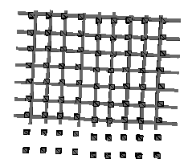

Statistical Mechanics Overview
Models of many-body physical systems with simple short range
interactions.
1. Partition functions
In classical (or quantum) equilibrium Statistical Mechanics the key
computational object is the partition function Z, defined as follows.
 Consider an array G of simple microscopic components, such as atoms or
magnetic dipoles (but generically called spins), in a crystal lattice.
Let S denote the set of all possible states of this array;
and let H denote a map from S to the real numbers, called the
HAMILTONIAN of the array. This map must have a number of other properties
before it is likely to make sense physically, but for the moment reality is
enough. In a given system (in particular for given S and H) the partition function
depends only on the temperature. Let b be a variable proportional to the
inverse temperature, then
Consider an array G of simple microscopic components, such as atoms or
magnetic dipoles (but generically called spins), in a crystal lattice.
Let S denote the set of all possible states of this array;
and let H denote a map from S to the real numbers, called the
HAMILTONIAN of the array. This map must have a number of other properties
before it is likely to make sense physically, but for the moment reality is
enough. In a given system (in particular for given S and H) the partition function
depends only on the temperature. Let b be a variable proportional to the
inverse temperature, then
For example, there are
physically useful models (called Potts models)
in which each spin si takes values
from the set Q_={1,2,...,Q} (some Q);
so S=hom(G,Q_);
and the Hamiltonian takes the form
| |
_
\ |
|
H(s)= |
- |
/_ |
dsi,sj
|
| |
(i,j)
|
where dx,y is
the Kronecker delta function and the sum is over nearest neighbour
pairs of spins on the lattice (a typical spin in our pictured lattice
has 4 nearest neighbours). In this example, if the lattice is finite
then the partition function is a polynomial in eb. A more
detailed discussion of partition functions can be found here.
2. Observables
An observable of the system is another map from S to scalars
(again there are further restrictions in practice).
The expectation value of an observable O is
| |
_
\ |
|
< O > |
= |
/_ |
O(x) e-bH(x)
|
| |
x in S
|
| | _________ | ____________ |
| |
Z |
In other words the expectation value is a weighted sum
over S of the value of the
observable in each state. The denominator allows the weight, called the
Boltzman weight to be
interpreted as a probability.
The Hamiltonian must be such as to
determine the likelyhood of the system being in state x (it being, let
us say, axiomatic that a single function inserted into the exponential may do
this). In our example the weight is largest when all the spins take
the same value (the values typically represent orientations of a
dipole moment, so `taking the same value' corresponds to allignment, a
commonly energetically favourable arrangement). On the other hand,
there will be many more random configurations in S than alligned ones,
thus we have a battle between ENERGY and ENTROPY.
- When b is small
(high temperature) this plays down the role of the Hamiltonian and
thus measurements of the observable with high entropy will tend to dominate
the average,
- when b is large (low temperature) the ordered
low energy configurations will be
more important.
If the lattice is large there may be a very dramatic switch between
the dominance of entropy and energy as b changes - a PHASE
TRANSITION. Many of the physical systems we are trying to model exhibit one or
more phase transitions.
3. Computation and partition vectors
Physically the lattice of spins is usually embeded in some Euclidean space in
such a way as to inherit a corresponding topology, in terms of which
the interactions in the Hamiltonian are local.

Suppose that the interations are
in fact short ranged, as in our example (and not, typically, as in
physical systems, but the approximation is not too crude to capture
the important features), and between
pairs of spins. Then the
set of pairs of spins with a finite interaction between them defines a
graph G of H.
(Henceforth i in G will mean the site of a spin, a vertex
in G; while (i,j) in G will mean the edge associated to the interaction
between the spins at sites i and j.)
Now consider any subset L' of the set Ls of
spins in the lattice with the property that
the maximal subgraph of G not
intersecting L' breaks into (at least) two parts (with spin sets
Ll and Lr, say).
 Formally L' might be any subset, but it is usually helpful to think of
a set of spins lying on the boundary of the lattice exposed when the
embedding space is cut in half somehow.
Write L for the pair (Ll,L') and define a vector ZL in
the space SL' of states of L', such that
ZLi is the partition function of the
system on LlUL' when the spins in L' are fixed in state i. This is the
partition vector of the pair (Ll,L').
For example, suppose our lattice is embedded in a double torus (as
shown on the right), and
L' is the set of spins on a cut which separates this into
two punctured toruses, one of which is illustrated in
the figure on the left
Formally L' might be any subset, but it is usually helpful to think of
a set of spins lying on the boundary of the lattice exposed when the
embedding space is cut in half somehow.
Write L for the pair (Ll,L') and define a vector ZL in
the space SL' of states of L', such that
ZLi is the partition function of the
system on LlUL' when the spins in L' are fixed in state i. This is the
partition vector of the pair (Ll,L').
For example, suppose our lattice is embedded in a double torus (as
shown on the right), and
L' is the set of spins on a cut which separates this into
two punctured toruses, one of which is illustrated in
the figure on the left
 (what constitutes being `on' a cut for these purposes depends on
H through the range of the interactions, but let us stick with our
example).
Let M=(Lr,L'),
whose spins intersect with L in L'. Then the partition function for
the entire lattice is
(what constitutes being `on' a cut for these purposes depends on
H through the range of the interactions, but let us stick with our
example).
Let M=(Lr,L'),
whose spins intersect with L in L'. Then the partition function for
the entire lattice is
Z = ZL . ZM
(provided only that we take care with the accounting for the
interactions within L').
 Note that we could equally well define a partition vector
for a still smaller lattice portion by making two parallel
(or at least non-intersecting) cuts, and
discarding both of the pieces which intersect only one of the cuts, to
leave a system having two exterior spin sets. (In our pictorial example we
would discard both singly punctured tori to leave a `connecting' tube.)
Indeed we could
arrange such a vector as a matrix, with row and column positions
indexed by the states of the two sets of exterior spins.
Note that if one exterior set L' is in some sense a translate of the
other then this matrix lies in End(k SL') (some suitable k),
and raising this
transfer matrix T to a power would correspond to obtaining
the partition vector for a longer tube.
Note that we could equally well define a partition vector
for a still smaller lattice portion by making two parallel
(or at least non-intersecting) cuts, and
discarding both of the pieces which intersect only one of the cuts, to
leave a system having two exterior spin sets. (In our pictorial example we
would discard both singly punctured tori to leave a `connecting' tube.)
Indeed we could
arrange such a vector as a matrix, with row and column positions
indexed by the states of the two sets of exterior spins.
Note that if one exterior set L' is in some sense a translate of the
other then this matrix lies in End(k SL') (some suitable k),
and raising this
transfer matrix T to a power would correspond to obtaining
the partition vector for a longer tube.
4. Transfer matrices
Consider the basic example of the square lattice we started with.
In this case the partition function may be built up using the
transfer matrix for a single layer as shown on the right (here we have
indicated how we might share the interactions within layers so as to
avoid double counting).
 Fixing the spins on the exterior of the whole lattice to states i and
j, say, we have
Fixing the spins on the exterior of the whole lattice to states i and
j, say, we have
Zij = (Tn)ij
where n is the linear dimension.
(Indeed note that exactly the same formal construction works for building a
cubic lattice out of square lattice layers, as illustrated below.)
Since the matrix is positive, so long as it is finite
there is a unique largest magnitude eigenvalue which is positive and
has an eigenvector which is also positive (Peron Frobenius theorem).
Thus (summing over all exterior boundary conditions i,j)
the partition function Z will be dominated, for large n, by this
eigenvalue.
 In our example the only analytic structure Z can have as a
function of b is zeros, and we now
see that none of these lie on the real b axis. This implies a
similarly bland behaviour for observables, with the only escape being
to take the lattice size to a large limit.
On the other hand many (perhaps all) physical systems exhibiting phase
transitions are finite (albeit very large), so our model should
provide some way of detecting phase transitions even on the finite
lattice. It does, as we shall see, but for now we note that
essentially everything is determined by the spectrum of T, and so turn
our attention to the computation of this spectrum.
In our example the only analytic structure Z can have as a
function of b is zeros, and we now
see that none of these lie on the real b axis. This implies a
similarly bland behaviour for observables, with the only escape being
to take the lattice size to a large limit.
On the other hand many (perhaps all) physical systems exhibiting phase
transitions are finite (albeit very large), so our model should
provide some way of detecting phase transitions even on the finite
lattice. It does, as we shall see, but for now we note that
essentially everything is determined by the spectrum of T, and so turn
our attention to the computation of this spectrum.
-
If the model is integrable (a consumation widely sought) then
the eigenvalue problem may be amenable to solution based on a series
of sophisticated guesses for the form of the eigenvectors.
-
Before
this, if there is translation or other symmetry in the system then fourier
transformation may help with diagonalisation.
-
And before even this,
there is help to be had if it happens that the transfer matrix at
fixed b is the
representation of an element of a familiar algebra (the algebra
and representation obtained being independent of b, so that the
general T may be thought of as a representation of an algebra valued
function of b).
This helps if the representation is reducible (as in practice it
usually is), since the formal descent to the irreducible components is
effectively a block diagonalisation of T.
We will begin by looking at this possibility.
5. Transfer matrix algebras
In order to extract a transfer matrix algebra from T it is necesary
that, in a certain sense, the algebraic and analytic sides of T decouple. That
is to say, functional aspects reside in the scalar coefficient ring,
while non-commutative aspects reside in constant matrices. To
illustrate this we will use our Potts model example.
Consider the matrix acting on
kSL' which has the effect of modifying ZL by
the inclusion of just one more interaction. A complete set of such
matrices would add an entire `layer' of interactions, internalising
the L' layer, thus their product is the layer transfer
matrix T. If the layer contains n spins, and V is the space with
basis Q_, then T acts on the tensor product Vn.
Each single interaction matrix
will act trivially on all but one or two of these factor spaces
- if the interaction is from this layer to the next, then the new
partition vector Z' with new external spin si' (and
si internalised) is given by
Z'|{si'=k} =
Z|{si=1} + Z|{si=2} +
...+ Z|{si=k-1} +
eb Z|{si=k} +
Z|{si=k+1} +...
so the local transfer matrix Ti acts non-trivially on one
copy of V only, where it has all off-diagonal
entries 1, and all diagonal entries eb;
- if between two spins i,j within the layer then Tij is
diagonal on VxV with entry eb when the two spins are the
same, and entry 1 otherwise.
(NB different models will
involve tensor factors in different ways.)
Putting v=eb-1 we find
|
T |
= | II |
(v1+Ai) |
II |
(1+vAij) |
| |
i in G | |
(i,j) in G
|
where 1 is the appropriate unit matrix and the matrices A_ determined
by the above are independent of b.
These matrices obey
- Ai Ai = Q Ai
- Aij Aij = Aij
- Ai Aij Ai = Ai
- Aij Ai Aij = Aij
- Ai Ajk = Ajk Ai (i,j,k distinct)
- Ai Aj = Aj Ai
- Ail Ajk = Ajk Ail
and hence form a (highly reducible) representation of the
Temperley-Lieb algebra in a certain specialisation.
Bibliography
R Baxter, Exactly Solved Models in Statistical Mechanics, Academic
Press.
P Martin, Potts Models and Related Problems in Statistical Mechanics,
World Scientific.